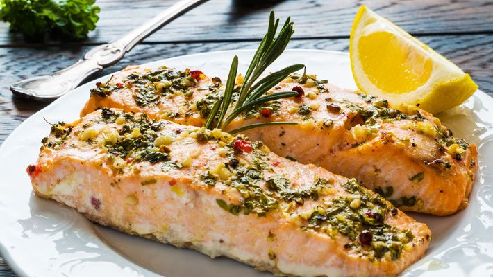

Salmão ao forno

Ingredientes
- 1 filé de salmão (com pele)
- 3 dentes de alho
- 1/2 pimentão vermelho ou amarelo
- Sal a gosto
- Azeite
- 100g de margarina
- 1 punhado de alecrim
- Cebola cortada em rodelas
Modo de preparo
- Lave o salmão e tempere com o limão e o sal, corte o alho bem fino e espalhe por cima do salmão.
- Junte o alecrim e reserve por 20 minutos.
- Em uma assadeira ou tabuleiro, coloque a cebola cortada em rodelas até que cubra completamente o fundo da assadeira e regue com o
azeite.
- Após os 20 minutos, coloque o salmão já temperado em cima da cebola (salmão com a pele).
- Corte o pimentão e o tomate em fatias finas e espalhe sobre o salmão.
- Com a ponta de uma faca, tire lascas de margarina e coloque sobre o salmão (a quantidade não precisa ser muita, o importante é que esteja
em todo o peixe).
- Cubra a assadeira com um papel laminado e leve ao formo por exatos 20 minutos. Após isso, retire o papel laminado e volta ao forno por mais
5 minutos.
- Retire o salmão, coloque em uma bandeja para servir e aproveite a cebola que está na assadeira como acompanhamento.